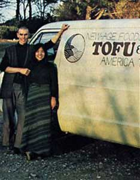

Bill Shurtleff and Akiko Aoyagi are astonishing people. For while our political and economic and agricultural "leaders" weep and wail and gnash their teeth about the world's food "crisis," Bill and Akiko are quietly sure that there really isn't any food crisis at all.
"The world does have a growing population problem," say Akiko and Bill, "but it's still no worse than the population problems faced for hundredsofyears by large parts of Asia. And if we'll just use the simple food ideas that Asia has used for those same centuries, we'll find it quite easy to feed several times the current population of the world... withoutresorting to all the energy-intensive chemical fertilizers, pesticides, fuels, and machinery with which the agribusiness corporations now rape the planet."
Big talk? Maybe. Except that Bill and Akiko can back every word they say with cold, hard scientific analysis...their own personal experiencesofthe past five years... and the successful history of at least one-quarter of the world's population over the past 2,000 years . The evidence for their case, in other words, is a little hard to ignore.
Who are these two people? How have they been able-in the inflationary 1970's-to feed themselves for years at a time on less than 30 cents a day each ... and still enjoy perfect health while working 16 hours a d ay, six or seven days a week? Why were they able to stumble onto such an easy, age-old answer to today's worsening food problem... when all the money spent by all the world's governmentsonly seems to intensify that problem and make it bigger?
Bill Shurtleff was born in Oakland, California in 1941 and he grew up on a two-and-a-half-acre mini-farm on the edgeofLa-fayette, California. Upon his graduation from Stanford University in 1963 Bill joined the Peace Corps and spent the next two years teaching high school physics in Nigeria. He also worked two months with Dr. Albert Schweitzer before leaving Africa to travel through France on his way back to the United States,
"The cultural environment here in the States was entirely different when I returned," Shurtleff says. "I found myself living in one of the communities that started what became known as The Resistance. I lived with David Harris-who later married Joan Baez-and I began practicing meditation and doing draft resistance work. Then I went to Japan for a summer and met Gary Snyder, who made it possible for me to continue my meditation with an established group in a Japanese temple.
"After that I came back to the U.S., ran an Esalen program in human awareness for a year, and lived for two and a half years at the Tassajara Zen Mountain Center in California as a student of Suzuki Roshi. I then went to Japan... where I eventually met Akiko and began the work that my earlier life had prepared me to do."
And Akiko Aoyagi? She was born in Tokyo in 1950 and largely educated in a Quaker school. Akiko then studied clothing design in a Tokyo art college and, upon graduation, worked as a fashion designer for two companies.
"But I never really happy doing that, " Akiko now says in her delightfully accented English. "I was always looking for more meaning in my life. I was looking for a way to serve my fellow man.Together with Bill, I have found it.
Perhaps that's the understatement of the decade... or the next century. For, together with Bill Shurtleff, Akiko Aoyagi has researched, written, and illustrated a quiet little book-The Book of Tofu-that is already starting to revolutionize the eating habitsofthe Western world. And if that gentle, loving book casts as large a shadow as it now appears that it will cast... sooner or later. it will just as surely change the eating habits of most of the rest of the world, along with its agricultural, economic, and political establishments.
The following interview was conducted by Ed Vitale and Travis Brock in the North Carolina offices of THE Mother Earth News(restricted).
PLOWBOY: Bill, as I recall, you met Akiko in Tokyo in 1971. I can understand what she was doing there at the time, since she lived in Tokyo. But what were you doing in Japan?
SHURTLEFF: I had gone to that country to help Shunryu Suzuki Roshi - founder of the Tassajara Zen Mountain Center in California - establish a similar retreat there. As a prelude to that work, I enrolled in Tokyo's Christian University to study the Japanese language. And, to make a long story short, Suzuki Roshi passed away while I was at the university and the retreat was never built. But Akiko's sister, who also was a student at the school, introduced me to Akiko.
PLOWBOY: Why did your sister introduce you to Bill, Akiko?
AOYAGI: I had been working as a designer in a pressure-packed, highspeed job and I did not like it. It was a superficial, very exhausting life which I wanted to change. I wanted to go to Africa with the Peace Corps. It was then my sister told me about an interesting person studying high Japanese at the Christian University. She said he had spent two years in Africa and that I should meet him. That person was Bill and I did meet him and we found we had many common interests.
PLOWBOY: And, Bill, was one of those common interests the writing of a book about tofu?
SHURTLEFF: No, not at the beginning. We were obviously destined to do the book together, but neither of us knew it when we met. That was to come a little later ... although, looking back, I realize now that my life had been leading up to the book for some time.
PLOWBOY: In what way?
SHURTLEFF: My Peace Corps experience in Nigeria from 1963 to 1965 was particularly significant. I learned the language there-quickly and was able to become close friends with many people in the area. I visited their homes and saw firsthand the problems that Nigeria, a developing country, was having in providing enough food for its citizens. This was something new to me. I had always taken an abundance of food for granted and I was deeply moved by the problems and the suffering that I saw caused by a lack of enough to eat. I was even more deeply moved after I'd left the country, when I learned that many of my friends had died during the fighting and the starvation that swept that part of the world during the Nigerian/Biafran War. Biafra, as you know, soon became the classic case history of starvation in the modern world.
PLOWBOY: I know. People are still starving there.
SHURTLEFF: And in many other parts of the world. It's not making headlines now the way it did in the fall of 1974, but the world is deeply ensnared in a terrible food crisis. A crisis that gets worse every year, every month, every day. Anywhere from 15,000 to 60,000 people a day - a whole stadium full, and half of them children under five - are dying of starvation and diseases related to malnutrition every day. And 400 million of the children under the age of five who are alive today - the lucky ones-have suffered and continue to suffer such severe protein shortages that their physical and mental growth is now permanently retarded. That's 400 million children - twice the population of the United States - who are doomed to live an endlessly downward spiral of arrested development which leaves them unable to handle the daily stresses and workloads of fully productive, healthy citizens ... and which, in turn, dooms them to giving birth to another generation that will be even less fit, and so on and on. In addition to that, some onequarter of all the people on the planet now experience severe hunger at some time during each year.
And the only thing that's going to happen if we don't do something positive about this situation is ... it's going to get worse. And it's going to keep getting worse until, one way or another, it's going to touch my life and your life and the life of each one of your readers very, very directly.
PLOWBOY: Well one thing that we simply must do, in some way is limit the increasing number of human beings that are born ever year.
SHURTLEFF: Oh, of course. Everyone who knows anything about even the rudiments of the problem agrees with that.
Many concerned people today worry a great deal about the proliferation of nuclear devices and the ghastly dangers that this proliferation presents to the world. And they're absolutely right to protest these dangers and to put a stop to them.
But the real bomb that threatens the planet - the bomb that is certain to destroy us in the long run if we don't defuse it - is the population bomb. If we don't solve the population problem, it's only a matter of time until it just floods all our other problems out of existence.
The population of the planet is now doubling every 36 years. And the population of the poorest countries - the ones least able to afford any increase at all - is doubling every 20 to 25 years. At the same time, the total amount of productive farmland is not increasing at all. As a matter of fact, we're destroying some of our best land ... and covering it up with houses and highways and other developments.
So think about a country like Bangladesh or India ... a country that has trouble feeding itself right now. And then imagine that same country 25 years from now, with twice as many people as it has today. Even the most optimistic people who understand the problem are not very optimistic about solving it.
We often say it this way in our lectures: If the earth were ruled right now by a wise philosopher-king and he were asked to give one set of instructions to everyone in the world - one set of instructions that would do the most to ensure peace and plenty for everyone - he would undoubtedly say, "Please, don't any family have more than two children." There's just no question about it. No one who's studied the overall situation and understands it will disagree with that.
But that's the long-term solution to the world's food problem. And, luckily for us, there are other shorter-term things that we can do to ease - even solve - today's food shortage right now.
PLOWBOY: Such as?
SHURTLEFF: To answer that question, please let me first point out that, currently, there is no real food shortage on this planet. Tens of thousands of people starve to death every day and millions of others slowly waste away from malnutrition ... but not because of any real food shortage.
There is actually a great abundance of food and food production capacity on this earth. Enough to supply approximately seventimes the world's current human population with all the protein, etc., that all those people would need to live healthy, productive lives. And we could do it without burning up the vast quantities of petroleum-based fuels, fertilizers, pesticides, herbicides, preservatives, machinery, transportation, etc., that our modern agribiz establishment must consume in order to function.
PLOWBOY: You're saying, then, that a quarter of the earth's human population goes hungry during at least a part of every year and that as many as 60,000 people starve to death each day ... not because of any actual shortage of food or food production capacity in the world, but simply because we misuse that food and production capacity.
SHURTLEFF: Exactly. Mother Earth does her job just fine. She produces more than enough to feed everyone now alive. She's very generous to us. But we're even more lavishly wasteful. We create want and need in the midst of plenty. We've institutionalized the squandering of the planet's abundance. And we use two major tools to do this: affluence ... and what is usually called the Green Revolution, but which I prefer to call "international land misuse".
Now we all know how affluence changes our eating habits. Very poor societies base their diets on one or more of the staple grain crops. We think of rice as the backbone of most Oriental diets and, of course, the Western world still says that "bread is the staff of life" because our ancestors once built most of their meals on a firm foundation of wheat and other cereal crops.
But as first America, Canada, Australia, New Zealand, Great Britain, Germany, and other Western countries ... then Russia and her satellites ... and, finally, Japan and other Eastern nations ... as all these countries have become more and more affluent. their citizens have steadily eaten their way higher and higher up the food chain.
That is, when we're poor we're happy to live on fruits, vegetables, and large quantities of inexpensive grain. But as we get richer and richer, we prefer to feed our inexpensive grain to animals and then eat it one step removed in the form of expensive milk, eggs, and meat.
PLOWBOY: But this is nothing new. People have almost always eaten meat and eggs and milk.
SHURTLEFF: Oh, most definitely. But in the beginning, when man was still a forager, our ancestors enjoyed such luxuries only on a catch-as-catch-can basis. And even after we became an agrarian species-right up until the 1950's, in fact - these foods were always luxuries for most peoples. The good land down in the valleys and the flood plains was used for the cultivation of staple grain crops that, in the main, were eaten directly by humans. And the goats and cattle and hogs were raised on the uncleared land or the land that was too dry or too wet or too steep or too high for the production of staple crops. They were raised on the marginal lands. And this meant that, for most people, meat and milk and eggs were a luxury up until the 1950's.
PLOWBOY: And what happened then?
SHURTLEFF: Great sections of the world - led by the fossil-fueled economy of the United States - began to get rich. We became wealthy and our storehouses bulged ... especially with grain and especially in North America. For the first time in history we - at least here in North America - found ourselves with overwhelming surpluses of staple crops on our hands.
There just wasn't any way we could eat all that wheat and corn and oats and all those other cereal crops directly and, although we sold millions of tons of grain to Europe and Asia and Africa and South America and shipped millions of tons more to large areas of the world as aid, we soon realized that we couldn't get rid of our surpluses that way either. We were producing more grain than anyone could buy and the more we gave away, the more we destroyed the market for what we had left to sell.
We were drowning in grain. And even our soil bank and acreage allotment programs couldn't stop the flood. The faster the government came up with ideas for taking land out of grain production, the faster our new agribiz industry came up with ways of using cheap fossil fuels to hype the output of the acres that were still being farmed.
And then we began to muddle toward what, at the time, seemed a brilliant solution to the surplus problem. We began to pen livestock up in feedlots and broiler houses and "egg factories". And we started to pour all that grain down their gullets and convert it into meat and eggs and dairy products.
Wow! Why didn't we think of that before? Instead of letting those chickens and hogs and cattle pick up most of their living from marginal land, we could cram 'em in a feedlot and pour grain down their throats. Four pounds of grain for every pound of poultry and eggs we got back, and fifteento twenty pounds of grain for every pound of beef. Why, on the average, we could dispose of eight to ten pounds of the grain we were swimming in for every pound of animal protein our feedlots produced. It was the very inefficiency of the whole thing that made it so attractive to us!
Perhaps best of all, this was also something our advertising industry could really promote. It's a little difficult to add Elmer Wheeler's "sizzle that sells" to rolled oats and cream of wheat ... but that sizzle is already built into pork chops, beef steaks, milk, eggs, cheese, and ice cream.
It's easy, in other words, to convince people with money that they should eat higher up on the food chain. And that's what we wanted to do and that's exactly what we did. But, unfortunately, we've now taken this idea so far that we've divided the world's citizens into two very separate classes: One, a small affluent minority that daily consumes far more animal protein than their bodies can use and, two, a vast un affluent majority that - thanks to the actions of the rich minority - frequently can no longer even afford to fill their bowls with enough grain to ward off starvation.
PLOWBOY: Our affluent minority's buying power - a buying power based on rapidly dwindling stocks of fossil fuels - is artificially creating a "scarcity in the midst of plenty" for the overwhelming majority of the world's people.
That is, a few rich people in the world are now gorging themselves on far more concentrated animal protein than they need while a great many poor people are starving for lack of lower grade foods. Yet there would be more than enough to go around if the rich minority would just give up a little of the concentrated protein that it can't use anyway, thereby freeing up much larger quantities of the grain that the poor people do desperately need.
SHURTLEFF: Exactly. And here's how international land misuse - the highly acclaimed Green Revolution - helps to make our current inequity possible:
The Senoran Basin in Mexico is a near-classic example of what the Green Revolution can do to a traditional society. Up until about 12 years ago, the average farm in that basin measured approximately 40 acres in size and those 40 acres were tilled in a very labor-intensive manner. They were farmed by their owner-families the way they had been farmed for generations ... by hand and with animals. The yield per acre was nothing spectacular, but it was fairly steady from year to year. And the many small landholders who lived in the Senoran Basin were reasonably selfsufficient and independent.
But then someone said, "Gee, Mexico's population is really growing and we'd all like to eat higher up the food chain, and the old way of farming just doesn't produce enough to make that possible. But this land right here in the basin could grow a whole lot more if we'd bring in some of those new miracle hybrid seeds we've been hearing about. And if we'd use some big machinery to do all the work we've been doing by hand and with animals. And if we'd irrigate these farms, and pour on some chemical fertilizer, and use chemical pesticides to kill all the insects that want to eat those miracle hybrids."
The little farmers couldn't afford to do all that, of course, but the big ones could ... and did. And as soon as their yields per acre started to climb, the big farmers began to buy out the small ones. And then the multi-national agribiz corporations went in and bid the price of the land up even further. The cost of acreage in the Senoran Basin quickly tripled, the stakes rapidly became far too high for the few little farmers still left in the game, and all the 40-acre parcels of land were soon consolidated into farms that now average 200 acres in size.
PLOWBOY: And who owns those 200-acre farms?
SHURTLEFF: Multi-national agribiz corporations from the United States and the 4% of Latin America's elite who control 80% of Latin America's land.
PLOWBOY: And what has happened to the families who once owned the little 40-acre farms in the Senoran Basin?
SHURTLEFF: The peasants who formerly lived self-sufficient lives in the basin weren't needed there anymore once they had sold their farms. So, just as peasants who've been forced off the land usually do, they've moved to urban centers where, if they've been lucky, they now work. And. if they haven't been lucky, where they now look for work.
PLOWBOY: Well surely something good must have come out of this change. Let's see ... the switch was started in the first place to make the Senoran Basin more productive. Does the basin now indeed produce more food for its people than it did before?
SHURTLEFF: No, and that's one of the main points of the whole story. In the beginning, as the basin's traditional crops were being replaced by miracle wheat, the area did produce more food for local residents than it had before. More food and more profit for its new owners But it didn't take those new owners long to figure out that they could realize 70 times more profit yet by forgetting wheat, growing carnations, and then air-freighting the flowers up to buyers in Los Angeles. And if they didn't want to do that, they could still make a great deal of money by raising melons and lettuce and tomatoes for the Arizona and New Mexico market. Or they could grow grapes for the U.S. wine market.
The net result of this international land misuse, you see, has been that Mexican land which once raised a small, steady supply of food for Mexicans ... now produces almost no food for Mexicans at all. instead, it raises profits for foreign conglomerates and absentee landlords.
And this is not an isolated case history. The same thing is happening all over the world. The best land, for instance, in Brazil-and that once raised food for Brazilian consumption-now produces coffee for the United States and Europe. Or, to cite another example of the same trend: A recent UN study of seven southeast Asian countries has shown that the net result of the last decade's Green Revolution in those nations has not been an increase in the amount of food available to the poor people of those countries at all. Instead, this "revolution" has only driven the peasants off the land thereby depriving them of food and dramatically intensifying the problems of hunger and starvation.
PLOWBOY: The same thing-maybe not quite as bad but the same thing has been happening here too ... in the United States.
SHURTLEFF: Oh yes. Small farmers-the family farmers-have been going out of business by the hundreds of thousands here in the U.S. since the end of World War 11, and the control of this nation's land has also increasingly been consolidated in the hands of the large agribiz corporations. That's one of the main reasons why our poor whites and blacks have left the largely self-sufficient and independent lives they gnee lived in the country and flocked to the slums, factory employment, welfare checks, and high crime rates of the city. In most cases it's not because they wanted to make the change ... our perverted agricultural revolution has forced them to make it.
PLOWBOY: What you're saying, then, is that for the past 20 or 30 years we've thought that all we had to do to solve the world's food problem was to produce more food more efficiently. And that's what we've done and all we've accomplished by doing it, actually, is to aggravate and make worse the very food problem we set out to solve.
SHURTLEFF: Right.
PLOWBOY: Then what is the solution?
SHURTLEFF: At the least, on the national and international level, we must begin to undo the damage that the Green Revolution has done. We must switch away from the international land misuse that is now raping the planet and back to the traditional forms of regionally self-sufficient agriculture that our grandfathers practiced. This won't be easy, of course, because of all our institutions' dependency on-perhaps "addiction to" would be a better expression-the rape of the earth and its people that those institutions now practice. But the change must be made.
PLOWBOY: And on a personal level .... ?
SHURTLEFF: On a personal level, we can all expose the agribusiness fraud for what it really is and witness against it, each in our own way, at every opportunity. We can even make those opportunities by expressing our concern to government officials, writing letters to the editors of our local newspapers, speaking to friends and the clubs we belong to, organizing food co-ops that purchase only locally grown produce, and so on.
Most important of all, we can each take immediate steps to lessen both our individual demands on the planet and our dependence on the agribiz food monopoly. Many of your readers, of course, have already done this. They've moved to the country so they can raise much of what they eat. Or, if they still live in town, they've started buying as much of what they consume as possible from natural food stores or co-ops that handle only organically grown produce.
And, whether they live in the country or the city, I'm sure that a large percentage of MOTHER's readers have made an honest effort to eat a little lower-or, in some cases, a lot lower-on the food chain. They've cut some or all of the animal protein from their diets.
Such people now grow their own fruits and vegetables and eat more of them than they used to. They eat more grains. They raise sprouts and herbs in their kitchens. And, of course, they've learned to supply a great deal of the protein they need by making their own tofu and soy milk.
PLOWBOY: Of course! And the main reason they now make tofu and soy milk is because a guy named Bill Shurtleff and a lady named Akiko Aoyagi wrote and illustrated a book on the subject. Which brings us back to when you two met in Tokyo in 1971.
Tell me, Akiko, what really got you and Bill started on The Book of Tofu?
AOYAGI: It seem like it just happen. Bill, I think, had already developed a great respect for tofu before he met me ... more so than me, I think, because I had grown up with it just like you grow up with bread in this country. I was so familiar with tofu that I maybe didn't realize how valuable it could be until I begin to see it through Bill's eyes.
And then, I remember, we went to a very famous restaurant one night and had a 12-course meal and every dish had tofu in it and the meal cost us very little per person. This excited Bill even more-how they could serve such a meal for so little-and that made me excited too.
Next we visited a tofu shop in our neighborhood and the master there invited us to come the next morning and watch him work, And that was the first time that either one of us had known how tofu was made and we became very interested in it.
Before long we thought we'd spend just a few months writing a little book on tofu for Westerners. But as we experimented with recipes and learned more and more about making tofu and using it, the book got bigger and bigger. Finally we took three and a half years to finish it. So what started as just our interest in this food became quite a job for us.
PLOWBOY: Bill, do you have anything to add to that?
SHURTLEFF: Only details. Akiko just said that I had developed a great deal of respect for tofu before I met her, and she's right. When we met, I had just spent a year in Japan as a penniless student. I had almost no money at the time, and I had just lived for 12 months on 30 cents a day ... and I had never felt better in my life.
And the key to my good health on such a small budget was the 12-ounce cake of tofu that I ate every day and which I bought for only 13 cents a pound. It was because of that experience that I had developed a tremendous respect, and a love, for tofu.
I had also become quite intrigued by tofu's versatility. When I'd go down to the neighborhood shop around the corner every morning, the family there would be making three kinds of deep-fried tofu, another type that had a texture like custard pudding, still another that was grilled like steak, and so on and I'd think, "Wow! Look at all the different kinds of tofu." Then when a friend took Akiko and me to the tofu restaurant-we later learned that it has been in business for 270 years and that it's one of Japan's most respected houses of tofu haute cuisine -I was simply floored. The food was absolutely delicious and we were served a 12-course meal-in Tokyo, the city with the highest cost of living in the world-for $2.75 per person. I thought, "Hey! How can they do this?"
And then quite by accident-or maybe we had just reached the right stage in our lives for it to happen-while we were making a purchase at the local tofu shop, the master there asked if Akiko and I would like to come in the next morning and watch him work.
PLOWBOY: Out of the blue-just when you were as receptive as you could possibly be to such an invitation-you were unexpectedly asked to watch tofu being prepared?
SHURTLEFF: Yes, and Akiko and I-of course-went down to the shop the next morning and spent four hours watching this man as he worked making tofu.
PLOWBOY: And obviously, since you eventually wrote such a beautiful book on the subject, you must have been impressed by what you saw.
SHURTLEFF: Tremendously impressed. Everything about this master's whole operation was so right. In the first place, this was just a beautiful little cottage industry that fit into a space of only 12 X 15 feet. All the tools and processes that this man used-while working harmoniously in his own home and with his wife-were simple and energy non-intensive. Everything about the operation was very basic and self-contained ... yet these two people were producing wonderful food for people for only pennies a pound. It was the same with the other end-the selling end-of the business. The customers walked right up to a window of the shop and bought their tofu directly from the craftsman and craftswoman who made it. And that shop, of course, was really the tofu makers' home. So there was absolutely no lost motion, nothing extra to add to the price of the product that these two people sold. There was no distributor markup, no retail markup, nothing to add for store fixtures or advertising. There was no transportation expense, no margin for pollution control, nothing like that tacked on either ... since this beautifully self-contained little shop didn't have any of those expenses. I was immediately struck by all that and I couldn't get over it. And the second thing that really impressed me about this shop was the spirit with which the tofu master worked. His work, in the Zen tradition, was actually a spiritual practice. There was a carefulness about what he did: if, as he poured a whole bucketful of soybeans into his simple grinder, a single bean fell on the spotless floor of the shop ... he reached down, picked up that one bean, and put it back with the rest. And as he worked, this master drew my attention to the simplicity of his tools and he explained how he planned what he did so that he wouldn't waste any water ... and I began to realize that the spirit manifested by this man was precisely the spirit that is starting to blossom now in the United States.
PLOWBOY: You made that connection?
SHURTLEFF: I made the connection and I decided right then that I wanted, in some way, to tell the people back here in the U.S. about these things: about a 270-year-old restaurant that made tofu in its basement and served fantastic meals to people for $2.75 and about this craftsman who so simply and inexpensively and religiously prepared such protein-rich food in his home for his neighbors. I realized, while standing there watching that tofu master work, that this was what I wanted to do ... that this was something I had to do.
PLOWBOY: And what about you, Akiko?
AOYAGI: Yes, me too ... only a-little different. Although I am Japanese, I was not brought up close to the old Japanese ways. I only learn them through Bill. I wanted to leave the pressures of the life I had been living and do something connected to social work or something creative with my hands. But I didn't know how. Then it seemed that, with Bill, I could realize these dreams while I also learned the old Japanese ways and I was very happy.
PLOWBOY: OK. And how did you work together, once you'd actually started to do the book.
SHURTLEFF: Our jobs divided rather nicely from the beginning. Akiko is an excellent cook and an artist, and I was the one who was most interested in the mechanics of tofu production. So I apprenticed myself for more than a year to the master of that neighborhood tofu shop and Akiko began to experiment with tofu recipes. My role was to learn how to make tofu and hers was to learn to cook with it.
PLOWBOY: You apprenticed with the tofu master who had originally invited you into his shop?
SHURTLEFF: Yes. And he was the best possible introduction I could have had to tofu. He showed me his ways for over a year and then he said, "Now that you've seen how I do it, go to other parts of Japan and learn other people's ways of making tofu. Find what is common and what is unique about each master's methods, and then choose the best of all you learn to take back to the West."
It was only later, after Akiko and I had studied the methods of many other tofu makers, that I realized how exceptional my original teacher had been. He was unique in the way he prized the traditional old ways of his craft. I was very lucky to study under him first and then-under his direction-to go out and study the methods used by other, more modern, tofu makers.
PLOWBOY: I take it that not every tofu master you met in Japan was as self-sufficient, energy-saving, and as spiritually oriented as your original teacher.
SHURTLEFF: Not at all. The industrial revolution has taken place in Japan just as it has here. Maybe not quite in the same way, but it has swept over that country too. And most Japanese craftsmen are very aware of the changes that the revolution has brought with it. They're quite aware of the way their traditional technologies have given way-and are still giving wayto the energy-intensive technology of the modern world. It seems to me that most Japanese craftsmen are very sure in their own minds just where they stand along the curve of the industrial revolution. There are only a few who still do things in the old way because they haven't yet heard about more modern methods. But there are still a sizablesmall but sizable-number who know about the new but have deliberately chosen to practice the old traditional ways of their craft. Then there are many others who are gradually using higher and higher levels of technology ... and gradually losing the understanding of their work as a spiritual practice. They frequently get into a line of work as much to make money as for any special desire to learn that particular occupation. Finally, there are the people who work for money alone. They have no real pride in what they do ... it's just a job to them. A job to be gotten through as quickly as possible with no real thought given to the quality of whatever is being done, let alone its spiritual characteristics.
PLOWBOY: I suppose you saw examples of all these possibilities as you traveled around Japan visiting tofu makers.
SHURTLEFF: Oh, yes. We saw tofu made on every level of this industrial progression. Everything from small traditional home shops like the one I apprenticed in, to giant automated stainless steel factories that pump out tons of additive-laden, plasticwrapped tofu every day and market it like Wonder Bread. And the overwhelming majority of today's Japanese, of course, are much prouder of the tofu factories than they are of the tofu shops. They take a great deal of pride in their stainless steel, automated machines and their mass-produced tofu that can be shipped all over the country without spoiling. It isn't as good as the tofu made fresh each morning in the little shops ... but most Japanese are prouder of it. In effect they're saying, "See, America. We can do it too. We can mass-produce our food in factories the same way you do."
PLOWBOY: That's terrible! The mass-produced tofu, I mean ... and the fact that so many Japanese now prefer it over the purer, fresher tofu made in small neighborhood shops.
SHURTLEFF: Yes, but that's the industrial revolution for you ... and I don't pass any judgment on the Japanese for what they're doing. Nor do I pass judgment on the lesser developed countries that are still much farther back on the curve and doing their best to get to where Japan is right now. When I was in Nigeria, for example, I was really amazed by how well the old culture-the tightly knit family living in such beautiful harmony with the surrounding environment- worked. And I tried to make my students aware of their unique and priceless heritage ... but they didn't want to hear about it. They were much more interested in turning their backs on the old ways, building a big factory, and transforming their region into just another suburb of Los Angeles.
PLOWBOY: They want to repeat our mistakes all over again.
SHURTLEFF: That's right, and there doesn't seem to be any way to make them change their minds ... just as there was no way to change ours. We had to do the same thing too, you know. And it's only now that we've lived with what we've done to ourselves for a certain number of years that we're starting to say, "Wait a minute. This isn't what we thought it was going to be. Our machines crank out a lot of goods ... but they're all plastic and they break too easily. And our food doesn't have any taste any more and it gives us cancer and we can't breathe the air in our cities and we're poisoning our soil and our lakes and our rivers and maybe all this stuff we've been calling 'progress' isn't worth the effort after all.'' It's only now, Wu see, after we've been through these changes that we can begin to understand what the industrial revolution has cost us. It's only now that we're beginning to want to go back and search for some of the things we've lost. But the Japanese and all the countries strung out behind them on the development curve aren't that far along yet. They're still too interested in trying to catch up with us to realize what the race is costing them. And we can't tell them. This is something that each country must learn for itself, A Japanese Zen master says it this way: There's a big jar full of sugar and three ants. The first ant-the American ant-is right down in the middle of the jar and he's gorged himself on that sugar until he's getting sick of it. The second ant-the Japanese ant-is up on the rim of the jar and starting to climb down inside with tremendous anticipation. And the third ant-the ant from the developing countries-is standing on the table outside the jar looking up.
PLOWBOY: But is he looking up with envy ... or with an awareness that maybe it's not worth struggling all the way up into the jar in the first place?
SHURTLEFF: Unfortunately, the third ant is looking up with envy. He knows it's getting late and that he'll probably never get to the sugar at all. But he's willing to sacrifice everything he has to try. He's desperate to catch up with the first and second ants. And, as I've said, I can't pass judgment on that. After all, we insisted on the right to make the same mistake ourselves ... and, besides, a great deal of good has come out of the industrial revolution. Electricity, for example, is a tremendously valuable tool. It's just that we all seem to have to play with it for a certain length of time before we discover that it's far better to produce electricity with the wind and water and the sun ... than with nuclear reactors. There's another side to this too: How can I criticize the Japanese for using factories to produce so much of the tofu that they now consume? At least they're eating mostly tofu instead of meat ... which means they're getting almost all their protein eight or ten times more efficiently than we're getting ours. How can I criticize a people that still has so much to teach us?
PLOWBOY: A good point. Akiko, can you tell us anything else about how you and Bill researched, wrote, and illustrated The Book of Tofu?
AOYAGI: We lived on very little while we did the book. We traveled with backpacks and sometimes spent the nights in temples. And we didn't just visit the tofu factories we have talked about. We also went up in the mountains and talked to the grandmothers who still remember the old ways. And we went out on tiny Suwanose Island to the Banyan Ashram commune, where we learned a very simple way to make tofu that no one else knew. We even went to Taiwan to learn how tofu is used differently there than in Japan. And all the time we experimented. Bill tried different ways of making tofu and I learned new ways to cook with it.
PLOWBOY: Did you learn anything of any particular importance in Taiwan, Bill?
SHURTLEFF: Oh, yes. Taiwan was especially important. It's way back behind Japan in its industrial development and the people on Taiwan haven't yet started to switch to meat and eggs and milk and haven't begun to import Kentucky Fried Chicken and McDonald's hamburgers the way the Japanese have. Everyone in Taiwan bases his or her diet on tofu and soy milk. And even though there are twice as many people per cultivated acre of land in Taiwan as per cultivated acre in Bangladesh, everyone in Taiwan is well fed.
PLOWBOY: Whereas Bangladesh is always having trouble finding enough food to go around.
SHURTLEFF: Exactly. And when I saw what was going on in Taiwan, I suddenly realized-click!- this is relevant to everyone. Up until that moment I had been thinking more in terms of bringing the Zen of tofu making to the United States. I had been thinking, "This is something that a certain number of Americans will like." But then, in Taiwan, it dawned on me that tofu is really Food For Mankind ... which is what we subtitled our book. This is the way we're going to supply ourselves with protein in the years to come. Tofu and soy milk are for everyone. That's when everything really fell into place for me. I had started out thinking about tofu and the nice, little, energy nonintensive way it could be made ... and now I began to realize how tremendously important soybeans are in terms of planetary food resources. You can grow more usable protein on an acre of land in the form of soybeans than you can with any other crop. And, if you eat those soybeans directly in the form of tofu and soy milk the way they do in Taiwan, you can feed an awful lot of people. But if you feed that soy protein to animals first-which is what we do with 95% of the soy protein that we use here in the United States-the resulting meat and eggs and dairy products will support only about one-seventh as many people. This means that we're all wrong when we keep saying "there's a big food crisis" and that we have to constantly expand production with bigger machines and chemical fertilizers and pesticides and all the rest of the agribiz approach. It just isn't true. There's plenty to go around... if we'll only relax and eat our soy protein directly, the way one-quarter of the world's population has been eating it for 2,000 years.
PLOWBOY: But what about taste, Bill? Maybe we haven't been eating tofu all these years because we just don't like it.
SHURTLEFF: Yeah, I'm glad you asked that. Because Akiko and I have brought along one of the tofu dishes we prepare whenever we give one of our talks. This is a sour cream dip with garlic and dill. Here, you can try it on this celery ... or on these wheat crackers or these potato chips.
PLOWBOY: Boy! That's really good. I want some more of that.
SHURTLEFF: And you're the guy who just asked me about the taste of tofu.
PLOWBOY: OK, OK. I get your point. This is delicious.
SHURTLEFF: That's the reaction we always get at our talks. We serve the audience two or three kinds of dip, some deep-fried tofu, tofu burgers, and soy milk. And the reaction is always the same: people love 'em. And then they really become converts when they learn that eight ounces of tofu has as much usable protein as five and a half ounces of hamburger ... but that the eight ounces of tofu contains only 147 calories, no cholesterol at all, and only a fraction of the pesticides and other harmful chemicals that are now found concentrated in all the animal protein we eat. And when they learn that tofu can be used in the full panorama of Western cuisine, from appetizers to soups to main dishes to desserts and from breakfast to lunch to dinner to midnight snacks. And when they learn that tofu can be made at home for 10 cents a pound, or purchased from a tofu shop for 39 cents a pound, or bought from a supermarket-at least on the West Coast-for 49 cents pound.
PLOWBOY: This stuff is great. I'm going to eat it all. And while I'm doing that, Bill, please tell me about the tour you're on.
SHURTLEFF: Akiko and I are now wrapping up a four-month tour of the U.S. We've had over 300 invitations to speak in this country and we're handling as many engagements as we can. Generally 50 or 60-sometimes as many as 200 or more-people attend each of our demonstrations and we spend a couple of hours at each one showing slides, talking about tofu and soy milk, and preparing some of the recipes that are in The Bookof Tofu.
PLOWBOY: Akiko, what kind of reception has the book received in Japan?
AOYAGI: We haven't translated it into Japanese yet but, as an English-language book, it's almost a best-seller. No one has done a book like this before ... on the old traditional ways of making tofu. Many Japanese have forgotten the old ways and many more want to learn how to use tofu in Western dishes. So we have been on television in Japan to demonstrate these things.
PLOWBOY: And where do you go from here, Bill?
SHURTLEFF: Well, as you know, we've already written a second book-The Book of Miso-as a companion to The Bookof Tofu. Tofu is the main food but miso is the seasoning that goes along with it, and we've done a book with 400 recipes on that subject. We've also put together something we call The Book of Tofu, Volume II. This is a technical manual for the commercial preparation of tofu and it's designed to help the people who want to set up and operate tofu shops here in the United States ... or anywhere else in the world. I think there's something like 140 shops now being set up here in the States. We've been working, too, on a book about sea vegetables and how to cultivate and use them. And we're putting together another book on kudzu ... the Japanese plant that seems to be taking over large areas of the southern United States.
PLOWBOY: You're writing a book about kudzu?
SHURTLEFF: Yes, it's actually an amazing and an extremely valuable plant. I know you hate it in the South now, but did you know that the starch which comes from its roots is the highest quality cooking starch in the world? Or that an extract from those roots is a super medicine? We cover all that, and a great deal more, in the book we're doing on kudzu.
PLOWBOY: And you now coordinate all this work, don't you, from California?
SHURTLEFF: Yes. We've established something we call the NewAge Foods Study Center. It's located at 790 Los Palos Manor, Lafayete California 94549. If you have trouble finding our books in your local bookstore or you want to set up a tofu shop or you'd like to contact us for some other reason, you can write to that address.
PLOWBOY: Akiko and Bill ... you're amazing people. Thank you so much for talking to us and we look forward to learning more about your work in the future.
AOYAGI AND SHURTLEFF: Thank you. It was our pleasure to be here.
Although we really shouldn't have to add this note, we want to emphasize that Bill Shurtleff and Akiko Aoyagi-just like so many of the others we've featured in these pages-are not supported in any way by government, foundation, or business monies. Instead, Bill and Akiko are contributing a great deal of vitally useful work to the world and plowing much of the royalties from their books right back into that work ... while living on a very small shoestringIt's only fair, then, if you write to the New-Age Foods Study Center for any reason to enclose a dollar or two to cover at least part of the cost of Bill and Akiko's reply. -The Editors.
|
 |
|
|